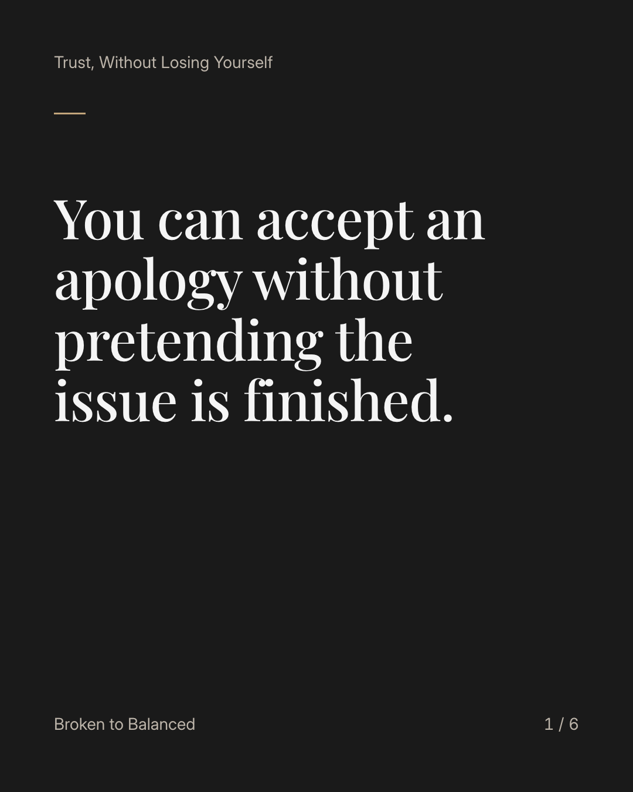
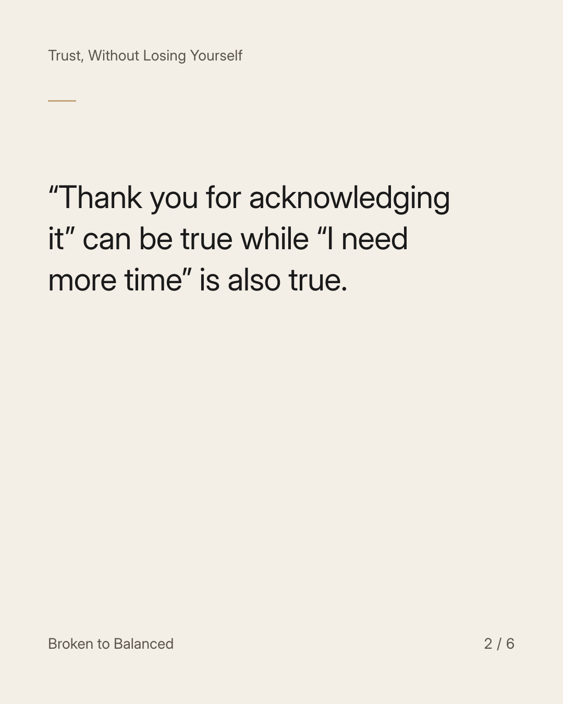
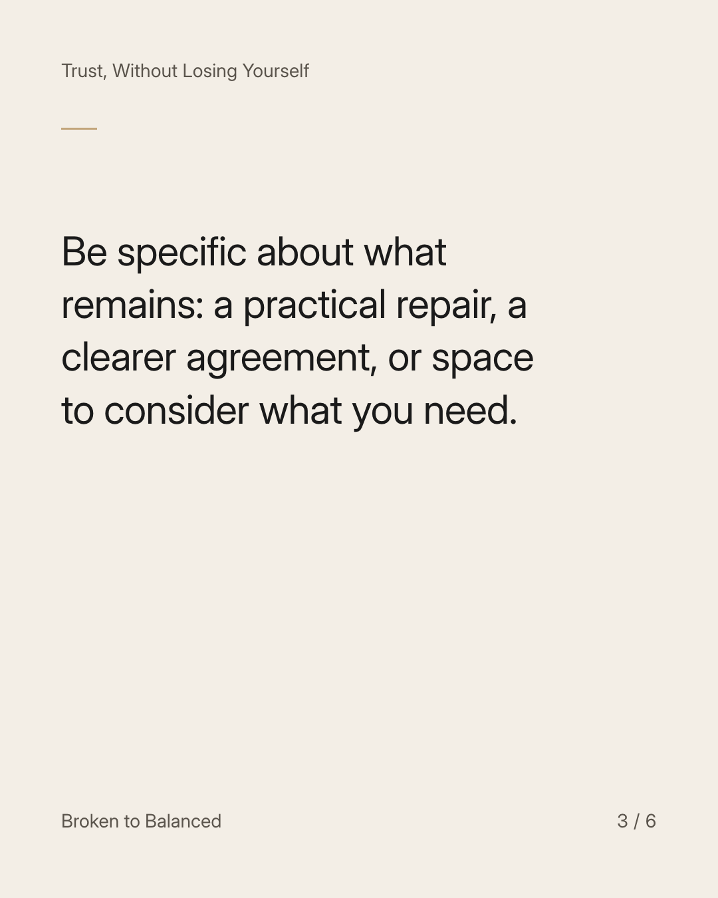
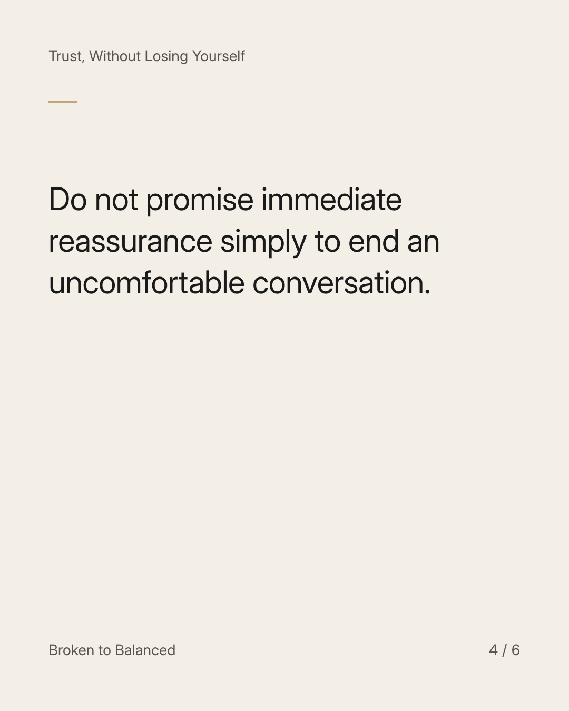
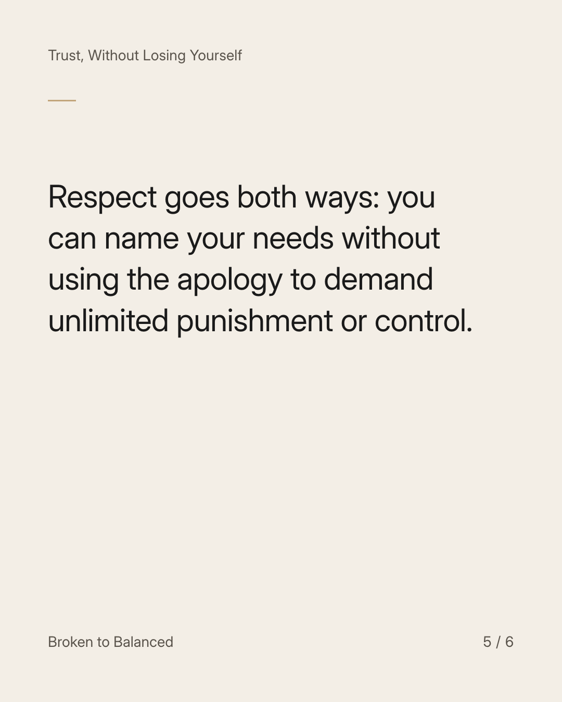
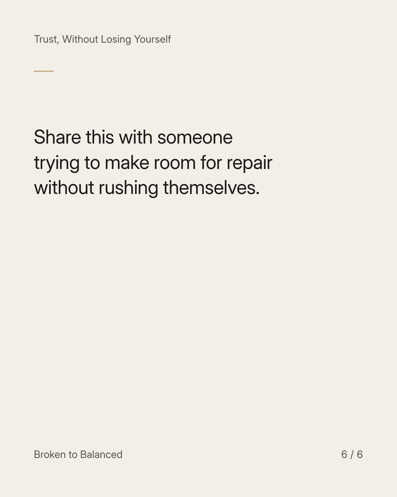

Exact text and accessibility text
You can accept an apology without pretending the issue is finished.
Slide 1 of 6. You can accept an apology without pretending the issue is finished.


Exact text and accessibility text
“Thank you for acknowledging it” can be true while “I need more time” is also true.
Slide 2 of 6. “Thank you for acknowledging it” can be true while “I need more time” is also true.


Exact text and accessibility text
Be specific about what remains: a practical repair, a clearer agreement, or space to consider what you need.
Slide 3 of 6. Be specific about what remains: a practical repair, a clearer agreement, or space to consider what you need.


Exact text and accessibility text
Do not promise immediate reassurance simply to end an uncomfortable conversation.
Slide 4 of 6. Do not promise immediate reassurance simply to end an uncomfortable conversation.


Exact text and accessibility text
Respect goes both ways: you can name your needs without using the apology to demand unlimited punishment or control.
Slide 5 of 6. Respect goes both ways: you can name your needs without using the apology to demand unlimited punishment or control.


Exact text and accessibility text
Share this with someone trying to make room for repair without rushing themselves.
Slide 6 of 6. Share this with someone trying to make room for repair without rushing themselves.
Exact caption
Plain-text fallback: select and copy the caption.